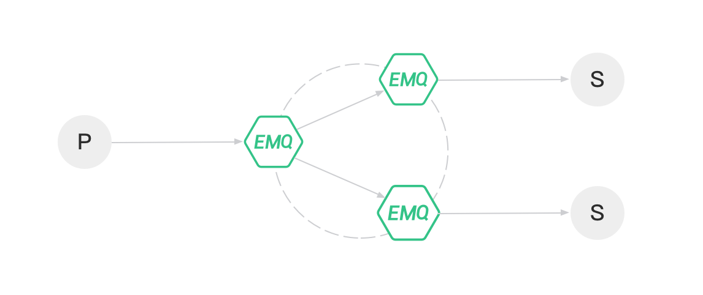

分布式集群
分布式 Erlang
Erlang/OTP 最初是爱立信为开发电信设备系统设计的编程语言平台，电信设备 (路由器、接入网关...) 典型设计是通过背板连接主控板卡与多块业务板卡的分布式系统。
节点与分布式 Erlang
Erlang/OTP 语言平台的分布式程序，由分布互联的 Erlang 运行时系统组成，每个 Erlang 运行时系统被称为节点(Node)，节点间通过 TCP 两两互联，组成一个网状结构。
Erlang 节点由唯一的节点名称标识，节点名称由 @ 分隔的两部分组成:
<name>@<ip-address>
节点间通过节点名称进行通信寻址。例如在本机启动四个 shell 终端，然后使用 -name 参数分别启动四个 Erlang 节点:
erl -name node1@127.0.0.1 -setcookie my_nodes
erl -name node2@127.0.0.1 -setcookie my_nodes
erl -name node3@127.0.0.1 -setcookie my_nodes
erl -name node4@127.0.0.1 -setcookie my_nodes
使用 node(). 可查看本节点名，使用 nodes(). 可查看已与当前节点建立连接的其他节点。我们现在到 'node1@127.0.0.1' 的控制台下，查看当前节点名和已连接的节点:
(node1@127.0.0.1) 4> node().
'node1@127.0.0.1'
(node1@127.0.0.1) 4> nodes().
[]
然后我们让 node1 发起与其他节点的连接:
(node1@127.0.0.1) 1> net_kernel:connect_node('node2@127.0.0.1').
true
(node1@127.0.0.1) 2> net_kernel:connect_node('node3@127.0.0.1').
true
(node1@127.0.0.1) 3> net_kernel:connect_node('node4@127.0.0.1').
true
现在再次可查看已与 node1 建立连接的其他节点:
(node1@127.0.0.1) 4> nodes().
['node2@127.0.0.1','node3@127.0.0.1','node4@127.0.0.1']
可以看到 node2、node3、node4 都已与 node1 建立了分布式连接，四个节点组成了一个集群。注意每当一个新的节点加入集群时，它会与集群中所有的节点都建立一个 TCP 连接。至此，四个节点完成了如下图所示的网状结构:
安全
Erlang 节点间通过 cookie 进行互连认证。cookie 是一个字符串，只有 cookie 相同的两个节点才能建立连接。上节 中我们曾经使用 -setcookie my_nodes 参数给四个节点设置了相同的 cookie: my_nodes。
详见: http://erlang.org/doc/reference_manual/distributed.html
EMQ X Broker 集群协议设置
Erlang 集群中各节点可通过 TCPv4、TCPv6 或 TLS 方式连接，可在 etc/emqx.conf
中配置连接方式:
| 配置名 | 类型 | 默认值 | 描述 |
|---|---|---|---|
| cluster.proto_dist | enum | inet_tcp |
分布式协议，可选值： - inet_tcp: 使用 TCP IPv4 - inet6_tcp: 使用 TCP IPv6 - inet_tls: 使用 TLS |
| node.ssl_dist_optfile | 文件路径 | etc/ssl_dist.conf |
当 cluster.proto_dist 选定为 inet_tls 时，需要配置 etc/ssl_dist.conf 文件，指定 TLS 证书等 |
EMQ X Broker 分布式集群设计
EMQ X Broker 分布式的基本功能是将消息转发和投递给各节点上的订阅者，如下图所示：

为实现此过程，EMQ X Broker 维护了几个与之相关的数据结构：订阅表，路由表，主题树。
订阅表: 主题 - 订阅者
MQTT 客户端订阅主题时，EMQ X Broker 会维护主题(Topic) -> 订阅者(Subscriber) 映射的订阅表。订阅表只存在于订阅者所在的 EMQ X Broker 节点上，例如:
node1:
topic1 -> client1, client2
topic2 -> client3
node2:
topic1 -> client4
路由表: 主题 - 节点
而同一集群的所有节点，都会复制一份主题(Topic) -> 节点(Node) 映射的路由表，例如:
topic1 -> node1, node2
topic2 -> node3
topic3 -> node2, node4
主题树: 带统配符的主题匹配
除路由表之外，EMQ X Broker 集群中的每个节点也会维护一份主题树(Topic Trie) 的备份。
例如下述主题订阅关系:
| 客户端 | 节点 | 订阅主题 |
|---|---|---|
| client1 | node1 | t/+/x, t/+/y |
| client2 | node2 | t/# |
| client3 | node3 | t/+/x, t/a |
在所有订阅完成时，EMQ X Broker 中会维护如下主题树 (Topic Trie) 和路由表 (Route Table):
消息派发过程
当 MQTT 客户端发布消息时，所在节点会根据消息主题，检索路由表并转发消息到相关节点，再由相关节点检索本地的订阅表并将消息发送给相关订阅者。
例如 client1 向主题 t/a 发布消息，消息在节点间的路由与派发流程:
- client1 发布主题为
t/a的消息到节点 node1 - node1 通过查询主题树，得知
t/a可匹配到现有的t/a、t/#这两个主题。 - node1 通过查询路由表，得知主题
t/a只在 node3 上有订阅者，而主题t/#只在 node2 上有订阅者。故 node1 将消息转发给 node2 和 node3。 - node2 收到转发来的
t/a消息后，查询本地订阅表，获取本节点上订阅了t/#的订阅者，并把消息投递给他们。 - node3 收到转发来的
t/a消息后，查询本地订阅表，获取本节点上订阅了t/a的订阅者，并把消息投递给他们。 - 消息转发和投递结束。
数据分片与共享方式
EMQ X Broker 的订阅表在集群中是分片(partitioned)的，而主题树和路由表是共享(replicated)的。
节点发现与自动集群
EMQ X Broker 支持基于 Ekka 库的集群自动发现 (Autocluster)。Ekka 是为 Erlang/OTP 应用开发的集群管理库，支持 Erlang 节点自动发现 (Service Discovery)、自动集群 (Autocluster)、脑裂自动愈合 (Network Partition Autoheal)、自动删除宕机节点 (Autoclean)。
EMQ X 支持多种节点发现策略:
| 策略 | 说明 |
|---|---|
| manual | 手动命令创建集群 |
| static | 静态节点列表自动集群 |
| mcast | UDP 组播方式自动集群 |
| dns | DNS A 记录自动集群 |
| etcd | 通过 etcd 自动集群 |
| k8s | Kubernetes 服务自动集群 |
manual 手动创建集群
默认配置为手动创建集群，节点须通过 ./bin/emqx_ctl join \
cluster.discovery = manual
基于 static 节点列表自动集群
配置固定的节点列表，自动发现并创建集群:
cluster.discovery = static
cluster.static.seeds = emqx1@127.0.0.1,emqx2@127.0.0.1
基于 mcast 组播自动集群
基于 UDP 组播自动发现并创建集群:
cluster.discovery = mcast
cluster.mcast.addr = 239.192.0.1
cluster.mcast.ports = 4369,4370
cluster.mcast.iface = 0.0.0.0
cluster.mcast.ttl = 255
cluster.mcast.loop = on
基于 DNS A 记录自动集群
基于 DNS A 记录自动发现并创建集群:
cluster.discovery = dns
cluster.dns.name = localhost
cluster.dns.app = ekka
基于 etcd 自动集群
基于 etcd 自动发现并创建集群:
cluster.discovery = etcd
cluster.etcd.server = http://127.0.0.1:2379
cluster.etcd.prefix = emqcl
cluster.etcd.node_ttl = 1m
基于 kubernetes 自动集群
Kubernetes 下自动发现并创建集群:
cluster.discovery = k8s
cluster.k8s.apiserver = http://10.110.111.204:8080
cluster.k8s.service_name = ekka
cluster.k8s.address_type = ip
cluster.k8s.app_name = ekka
手动(manual) 方式管理集群介绍
假设要在两台服务器 s1.emqx.io, s2.emqx.io 上部署 EMQ X Broker 集群:
| 节点名 | 主机名 (FQDN) | IP 地址 |
|---|---|---|
| emqx@s1.emqx.io 或 emqx@192.168.0.10 | s1.emqx.io | 192.168.0.10 |
| emqx@s2.emqx.io 或 emqx@192.168.0.20 | s2.emqx.io | 192.168.0.20 |
注意： 节点名格式为 Name@Host, Host 必须是 IP 地址或 FQDN (主机名。域名)
配置 emqx@s1.emqx.io 节点
emqx/etc/emqx.conf:
node.name = emqx@s1.emqx.io
# 或
node.name = emqx@192.168.0.10
也可通过环境变量:
export EMQX_NODE_NAME=emqx@s1.emqx.io && ./bin/emqx start
注意: 节点启动加入集群后，节点名称不能变更。
配置 emqx@s2.emqx.io 节点
emqx/etc/emqx.conf:
node.name = emqx@s2.emqx.io
# 或
node.name = emqx@192.168.0.20
节点加入集群
启动两台节点后，在 s2.emqx.io 上执行:
$ ./bin/emqx_ctl cluster join emqx@s1.emqx.io
Join the cluster successfully.
Cluster status: [{running_nodes,['emqx@s1.emqx.io','emqx@s2.emqx.io']}]
或者在 s1.emqx.io 上执行:
$ ./bin/emqx_ctl cluster join emqx@s2.emqx.io
Join the cluster successfully.
Cluster status: [{running_nodes,['emqx@s1.emqx.io','emqx@s2.emqx.io']}]
在任意节点上查询集群状态:
$ ./bin/emqx_ctl cluster status
Cluster status: [{running_nodes,['emqx@s1.emqx.io','emqx@s2.emqx.io']}]
退出集群
节点退出集群，两种方式:
- leave: 让本节点退出集群
- force-leave: 从集群删除其他节点
让 emqx@s2.emqx.io 主动退出集群:
$ ./bin/emqx_ctl cluster leave
或在 s1.emqx.io 上，从集群删除 emqx@s2.emqx.io 节点:
$ ./bin/emqx_ctl cluster force-leave emqx@s2.emqx.io
集群脑裂与自动愈合
EMQ X 支持集群脑裂自动恢复(Network Partition Autoheal)，可在 etc/emqx.conf 中配置:
cluster.autoheal = on
集群脑裂自动恢复流程:
- 节点收到 Mnesia 的
inconsistent_database事件 3 秒后进行集群脑裂确认； - 节点确认集群脑裂发生后，向 Leader 节点 (集群中最早启动节点) 上报脑裂消息；
- Leader 节点延迟一段时间后，在全部节点在线状态下创建脑裂视图 (SplitView)；
- Leader 节点在多数派 (majority) 分区选择集群自愈的 Coordinator 节点；
- Coordinator 节点重启少数派 (minority) 分区节点恢复集群。
集群节点自动清除
EMQ X 支持从集群自动删除宕机节点 (Autoclean)，可在 etc/emqx.conf 中配置:
cluster.autoclean = 5m
防火墙设置
如果集群节点间存在防火墙，防火墙需要开启 4369 端口和一个 TCP 端口段。4369 由 epmd 端口映射服务使用，TCP 端口段用于节点间建立连接与通信。
防火墙设置后，需要在 emqx/etc/emqx.conf 中配置相同的端口段:
## Distributed node port range
node.dist_listen_min = 6369
node.dist_listen_max = 7369